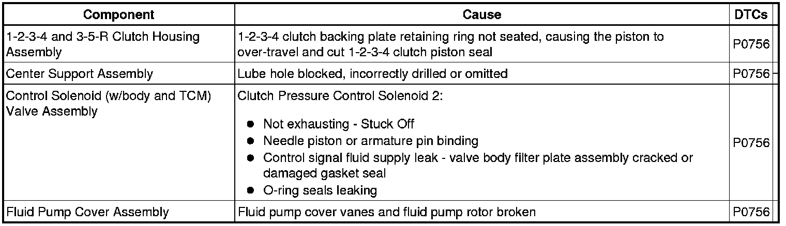

6L50/6L80/6L90 - Automatic Transmission
DTC P0756
Diagnostic Instructions
* Perform the Diagnostic System Check - Vehicle (Initial Inspection and Diagnostic Overview) prior to using this diagnostic procedure.
* Review Strategy Based Diagnosis (Initial Inspection and Diagnostic Overview) for an overview of the diagnostic approach.
* Diagnostic Procedure Instructions (Initial Inspection and Diagnostic Overview) provides an overview of each diagnostic category.
DTC Descriptor
DTC P0756
- Shift Solenoid (SS) 2 Valve Performance - Stuck Off
Diagnostic Fault Information
The following fault table will help determine if a hydraulic circuit or an incorrect position or application of a component affects the transmission operation.

Circuit/System Description
The shift solenoid (SS) 2 is part of the control solenoid (w/body and TCM) valve assembly. The assembly is attached to the lower control valve body and has no serviceable parts. The solenoid operates by the TCM opening or closing the ground circuit. With the solenoid circuit grounded (solenoid on), the internal plunger and metering ball block the exhaust fluid creating signal fluid pressure. The signal fluid acts against the clutch select valve 3 to overcome the valve spring force moving it to the apply position, allowing the shift. The TCM shifts the transmission by operating the solenoids in on/off combinations.
Conditions for Running the DTC
* No DTCs P0716 or P0717 are active or have failed this key on.
* No DTCs P0722 or P0723 are active or have failed this key on.
* No DTCs P1825 or P1915 are active or have failed this key on.
* Ignition voltage is between 8.6-18.0 volts.
* TCM high side driver (HSD) 1 is enabled.
* The TCM received valid accelerator pedal position and engine torque signals from the ECM.
* Throttle position is equal to or greater than 10 percent.
* Engine torque is between 120-1,492 N.m (89-1,100 lb ft).
* Transmission fluid temperature (TFT) is equal to or greater than 0°C (32°F).
Conditions for Setting the DTC
Condition 1 and Condition 2 must occur in sequential order.
Condition 1
Commanded gear equals first lock, (engine braking) or first freewheel and gear box slip is equal or greater than 100 RPM for more than 5 seconds.
Condition 2
Commanded gear equals second and second gear box slip is less than or equal to 35 RPM or gear box slip is equal to or less than 100 RPM and shift time-out occurs and PC Sol 4 commanded pressure is at maximum. This condition must occur 4 seconds or less.
Action Taken When the DTC Sets
DTC P0756 is a Type A DTC.
Conditions for Clearing the DTC
DTC P0756 is a Type A DTC.
Diagnostic Aids
* When attempting to set transmission performance DTCs, observe the Freeze Frame and Failure Records to assist in duplicating the failure conditions. Ensure the transmission fluid level is correct and there are no leaks.
* Use the scan tool to view the TFP Switch status and refer to the Transmission Fluid Pressure Switch Logic (Transmission Fluid Pressure Switch Logic) table to determine when a TFP switch should be active or inactive for a given gear. This will help to determine if the hydraulic circuit functioning and if the shift solenoid or the valve train is in an incorrect position.
Reference Information
Schematic Reference
* Drive Range, First Gear Engine Braking (Drive Range, First Gear Engine Braking)
* Drive Range, First Gear (Drive Range, First Gear)
Description and Operation
Transmission Component and System Description (Transmission Component and System Description)
DTC Type Reference
Powertrain Diagnostic Trouble Code (DTC) Type Definitions (Diagnostic Trouble Code Descriptions)
Scan Tool Reference
Control Module References (Programming and Relearning) for scan tool information
Special Tools
DT-47825 Control Solenoid Test Plate
Circuit/System Verification
1. Perform the Transmission Fluid Check (Transmission Fluid Check) . The fluid must be full and in good condition.
2. Start engine in park and wait a moment. Shift to Reverse, pause, and then shift to Drive (D6) without allowing the vehicle to move.
3. View scan tool parameters Commanded Gear and Gear Ratio.
4. Operate the vehicle in drive from a complete stop, with the calculated throttle position greater than 15 percent to obtain 56 km/h (35 mph) or more.
5. Make certain 1st breaking and 1st free-wheeling gears are attainable. Use the two scan tool parameters and refer to the Shift Solenoid Valve State and Gear Ratio (6L50/6L80/6L90 - Automatic Transmission) table to verify the correct ratio for the two commanded gear.
• If the DTC resets, go to Circuit/System Testing.
Circuit/System Testing
1. Perform the Line Pressure Check (Line Pressure Check) .
• If the pressure is out of specification correct that concern first.
2. Perform the Control Solenoid Valve and Transmission Control Module Assembly Cleaning (Control Solenoid Valve and Transmission Control Module Assembly Cleaning) and retest the DTC as outlined in the Circuit/System Verification steps.
• If the DTC resets, continue with testing.
3. Perform the Control Solenoid Valve and Transmission Control Module Assembly Inspection (Control Solenoid Valve and Transmission Control Module Assembly Inspection) .
• If a concern is found, repair or replace the control solenoid (w/body and TCM) valve assembly.
4. Perform the Control Solenoid Valve and Transmission Control Module Assembly Solenoid Performance Test (Control Solenoid Valve and Transmission Control Module Assembly Solenoid Performance Test) .
• If the solenoid is found to be leaking or stuck Off, replace the control solenoid (w/body and TCM) valve assembly.
• If the control solenoid (w/body and TCM) valve assembly shift solenoid functions correctly, inspect the lower control valve body assembly for the following:
* Clutch select solenoid valve and valve body bore for scratches, gouges, scuffing, scoring, and sediment.
* The valve should move freely in the bore without stopping or binding.
* Inspect clutch select valve 3 fluid circuits for blockage.
Repair Instructions
Perform the Diagnostic Repair Verification (Verification Tests) after completing the diagnostic procedure.
1. Replace the control solenoid (w/body and TCM) valve assembly. Refer to Control Module References (Programming and Relearning) for replacement, setup, or programming.
2. Perform the Service Fast Learn Adapts (Programming and Relearning) if internal transmission repairs are performed.